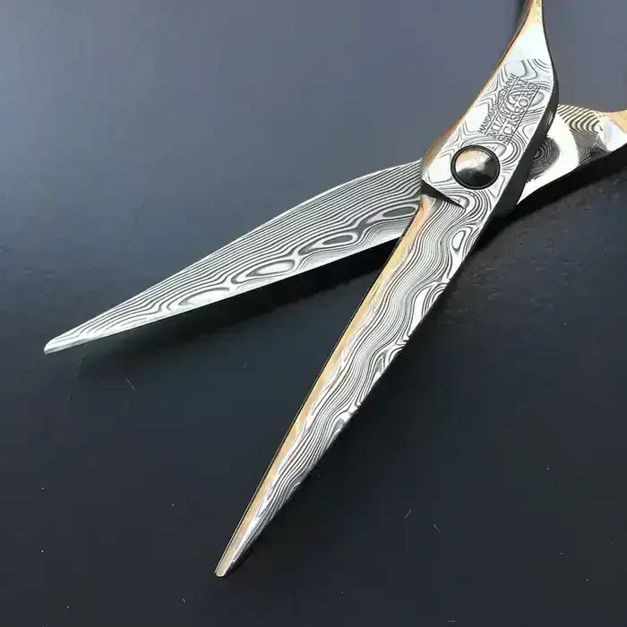
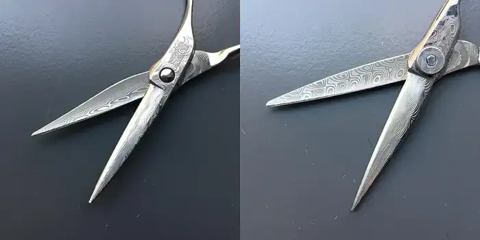
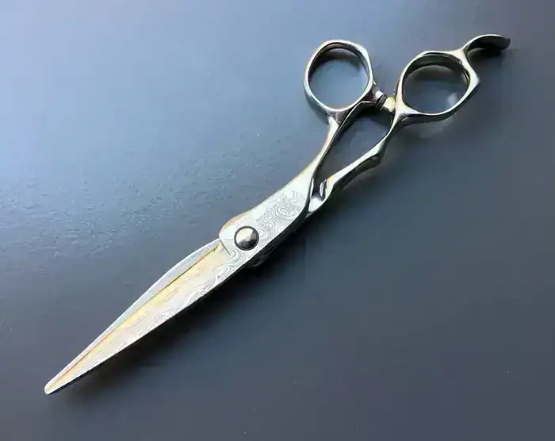

The steel
Damascus blades were forged from wootz — crucible steel made in India and Sri Lanka — and are recognisable by a banded, watery pattern on the surface. The pattern comes from the segregation of carbon and carbide-forming elements during slow cooling and forging, and it is a record of the process rather than a finish applied afterwards.
Maps, diagrams and images






The reputation for sharpness and toughness is old and partly documented; the mechanical claims are harder to assess, because surviving blades vary and modern tests are few.
The loss and the explanation
The technique disappeared around the eighteenth century, probably because the ore sources and the trade in wootz changed. In 2006 a German team reported carbon nanotubes in a Damascus blade and proposed them as the explanation for its properties; the finding was striking and has been questioned, since nanotube formation in a forge is not obviously reproducible and later work has not confirmed it as the mechanism.
What is well supported is the carbide banding and the role of trace elements — vanadium, molybdenum, chromium — in producing it. The romance of the nanotubes is a good story attached to a real metallurgy.
Documented: the pattern, its metallurgical origin, and the wootz trade.
Documented: the loss of the technique in the eighteenth century.
Contested: the carbon-nanotube explanation of its properties.
Overstated: the 'cuts a falling silk scarf' reputation.
The honest label: live debate about mechanism, with the object itself not in doubt.
Why it is in the archive
Because it is a real technology with a real lost technique and a modern scientific claim attached — and because the difference between the two is exactly what the archive exists to mark.
Open resources on this topic
- BookOn Damascus steel — Figiel, Leo S · 1991 (Internet Archive, free to read)
- BookDamascus steel blank cutters — U.S. Mint · 1895 (Internet Archive, free to read)
- BookFormation of Excess Carbide Phase in Damascus steel — Dmitry Sukhanov, Leonid Arkhangelsky · 2017 (Internet Archive, free to read)
- PapersOpen-access articles: DOAJ · PubMed Central · Internet Archive Scholar
- BooksPublic-domain and borrowable copies: Open Library · Project Gutenberg · Google Books
Cite this page
Momin, S. (2026). Damascus Steel. The Larger World Archive. https://drsamonline.github.io/LARGE_GLOBE/damascus-steel.htmlMomin, Sohil. “Damascus Steel.” The Larger World Archive, 2026, https://drsamonline.github.io/LARGE_GLOBE/damascus-steel.html.Momin, Sohil. “Damascus Steel.” The Larger World Archive, 2026. https://drsamonline.github.io/LARGE_GLOBE/damascus-steel.html.@misc{damascus2026damascus,
author = {Momin, Sohil},
title = {Damascus Steel},
year = {2026},
howpublished = {The Larger World Archive},
url = {https://drsamonline.github.io/LARGE_GLOBE/damascus-steel.html},
note = {Last reviewed 20 November 2026}
}Last reviewed 20 November 2026 · Corrections policy · this page is not peer reviewed
Sources for this page
- Wikipedia, “Damascus steel” — the steel, the pattern and the researchen.wikipedia.org
- Wikipedia, “Wootz steel” — the crucible steel it came fromen.wikipedia.org
- Wikipedia, “Crucible steel” — the processen.wikipedia.org
- Wikipedia, “Carbon nanotube” — the material in the 2006 claimen.wikipedia.org